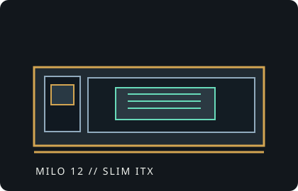

[ IDENTIFIED ENCLOSURE // MILO 12 / ML12 ]
SilverStone Milo 12 ML12
Approximately 370 × 105 × 318 mm (W × H × D), 12.38 L; slim Mini-ITX case supporting a full-length graphics card and 240 mm radiator.

VARIANT / ARCHIVAL CAVEAT: ML12 layout has a slim, horizontal footprint and can use optional optical-drive hardware. Check bracket and front-panel configuration before allocating radiator and GPU room.
Mechanical specifications and fit
| Catalog identity | SilverStone Milo 12, chassis model ML12. |
|---|---|
| Dimensions / volume | 370 × 105 × 318 mm (W × H × D); approximately 12.38 L. |
| Board / GPU / cooler | Mini-ITX motherboard; GPU up to 345 mm long, about 2.75 slots and 155 mm tall. CPU cooler height up to 70 mm. |
| Radiator / PSU | Supports radiator up to 240 mm, with radiator and fans combined thickness limited to about 50 mm. SFX or SFX-L power supply. |
| Drive bays | Two internal 2.5-inch drive mounts; no native 3.5-inch storage bay. Optional slim optical-drive support is dependent on the configured bracket. |
| Revision / identification | ML12 is the specific Milo 12 enclosure; distinguish it from other Milo numbered chassis and optional optical-drive covers. |
Compatibility notes
The slim enclosure's 70 mm cooler ceiling restricts CPU air coolers. GPU fit depends on card thickness as well as its up-to-345 mm length; also validate slot bracket and power plug dimensions. A 240 mm radiator is limited to a 50 mm radiator-plus-fan stack and must be planned with the graphics card. An optional optical drive consumes front-space otherwise available to other fittings.
- Confirm the exact PSU form factor: ATX units do not fit this model.
- Check fan/radiator stack and end tank against the longest GPU and motherboard components.
- Identify whether the unit has the optional slim optical bracket/cover.
Manufacturer specifications and manual
- SilverStone Milo 12 ML12 product specificationsOfficial manufacturer product page and technical specification.
- SilverStone ML12 manual (PDF)Official manufacturer-hosted manual with installation and fit diagrams.